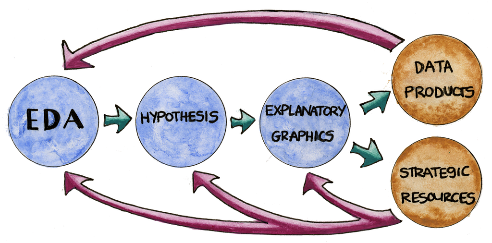
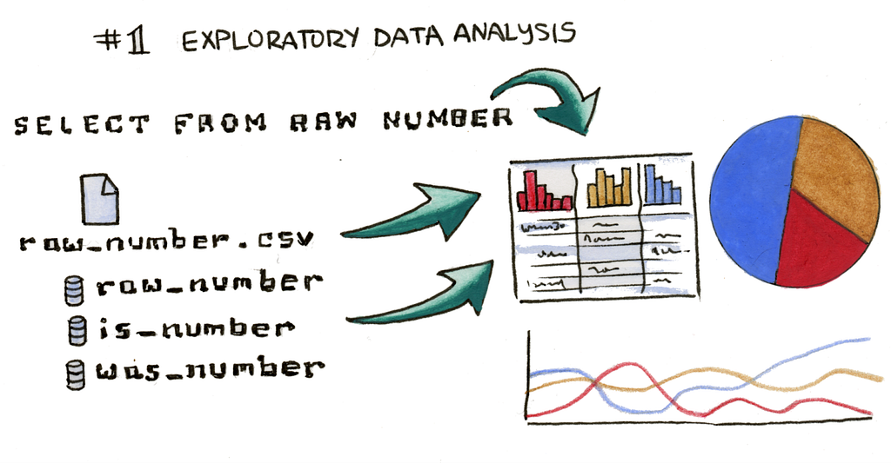
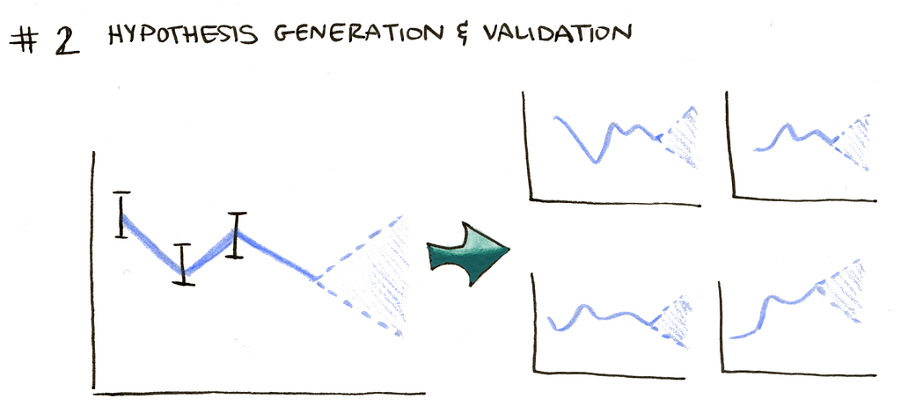
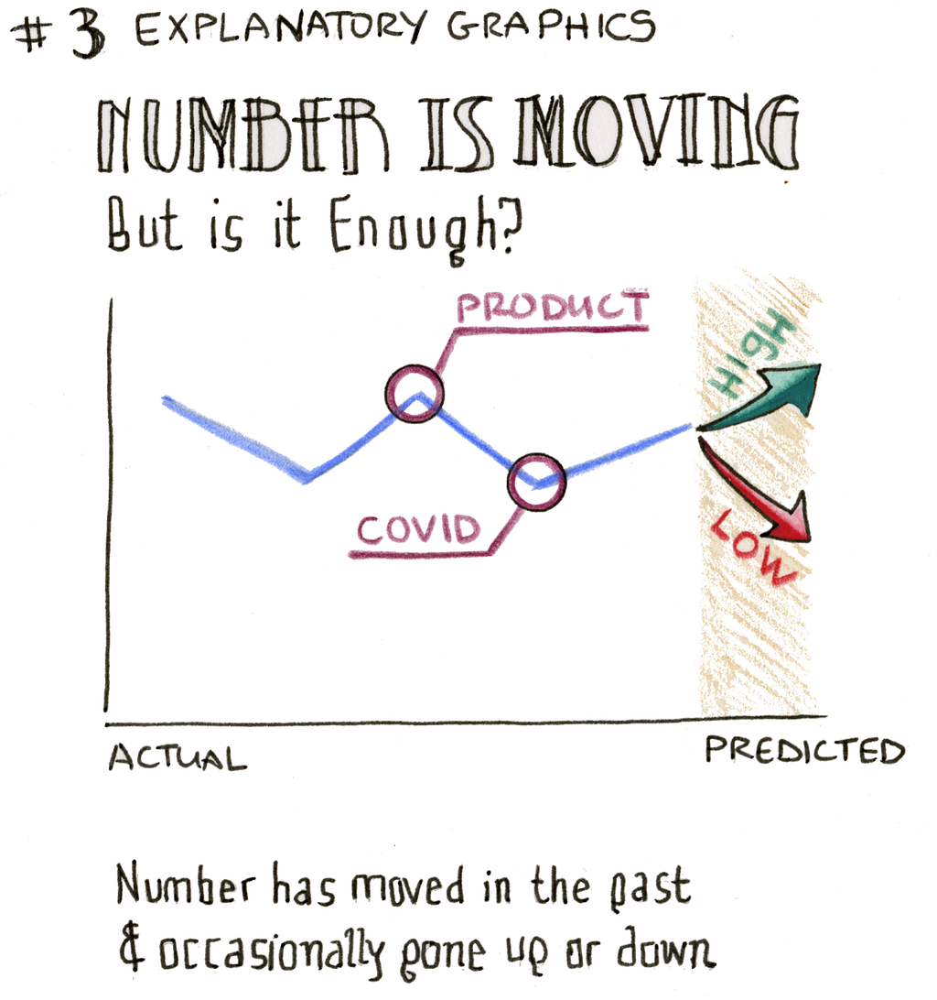
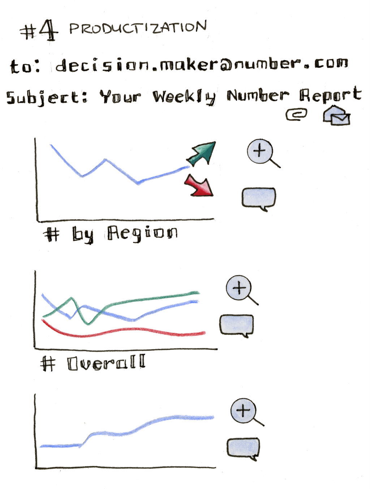
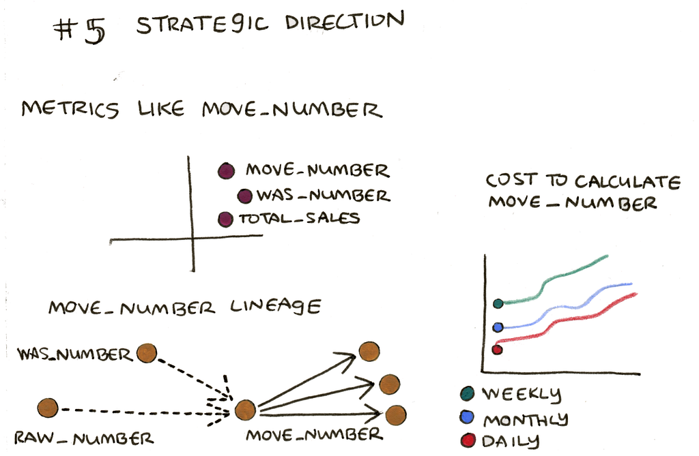

Visualization touches every part of the modern business.
Illustrations by Hajra Meeks.
Everywhere you look today, and especially in a data-driven organization, you’ll find data visualization. Data visualization is key to how modern companies create impact. It’s built into every tool and workflow. It’s an important part of the job not just for data engineers, data scientists and data analysts, but also the people without “data” in their title. It’s in product presentations, ad hoc communication on Slack, leadership reports to the shareholders and even in marketing materials.
We want to challenge the tool-centric and role-centric approaches we often see in data visualization which force a person to jump between tools or the artificially created walls of different roles.
At Noteable, we’re explicitly designing our data visualization functionality to reflect how people use data in their work today, not how they did it 15 years ago. We’re looking at how the expectations of data workers and data consumers have grown and converged regardless of their job title or the problem they’re addressing. We want to challenge the tool-centric and role-centric approaches we often see in data visualization which force a person to jump between tools or the artificially created walls of different roles. We feel this will encourage diversity of data visualization expression by bringing in strengths from other approaches. That means, even though we’re developing a computational notebook product, that we need to look at data visualization outside of the confines of a traditional notebook and place it within the broader context of how everyone is using data visualization.
Existing tools tend to be specific to the job/function
The design of tools used to create data visualization has not changed to reflect its ubiquity. Currently available tools are usually tied to and optimized for a specific use case. If you’re a data scientist, you’re focused on validating an approach and typically you’re using Jupyter notebooks or RStudio. If you’re an analyst, you might be using Tableau or Looker. If you’re creating explanatory graphics, it might be D3 if you’re a software developer or it might be Powerpoint if you’re not. If you’re working in finance or human resources, it might be Excel.
Many tools were designed before the data science boom
These tools were designed when data literacy was lower, organizations were less data-driven, and technical limitations meant that tools could only do so much. While the industry has continued to develop, many tools have progressed too tightly coupled with particular kinds of data, approaches to data and professional roles. This can lead to tools which feel highly specialized, such as the BI tools that are primarily used by data analysts.
Tight coupling between approach and tool is also the result of the evolution of data roles, which as they’ve matured have reinforced that the tool defines the job: Graduate courses advertise how to become a data scientist by learning python notebooks, bootcamps tell you to learn D3 so you can be a data viz developer, and countless workshops help you become an analyst by learning Tableau.
But the kinds of work being done by an analyst or data scientist or PM are not discrete, isolated moments of data visualization. The approaches used in one of these areas is not fundamentally different from the work being done in another area. Quite the opposite: the skills and approaches used in one approach could be very useful if incorporated into another.
We see these steps in isolation not because that’s the best way to use them but because they currently take place in isolation.
That’s why it makes more sense to move away from the idea that the data visualization an analyst does is different than that of a data scientist. We see these steps in isolation not because that’s the best way to use them but because they currently take place in isolation. It’s how our convenient rules like “Don’t use pie charts” or “Never use a rainbow color scheme” or “Maximize your data to ink ratio” were created even though they continue to be challenged when analyzed for tasks outside of the isolation in which they were created. But these steps are part of a process that transforms data from raw material into insights and actions. That process spans from the earliest exploration of the data all the way through to the presentation of that data to stakeholders and leadership.
The Data Visualization Lifecycle

It’s best to look at data visualization uncoupled from role or tool, and instead to focus on where it’s used in the process of working with data. Each of these discrete steps requires specific features of data visualization, from the exploratory data analysis of raw data, through validation of hypotheses and explaining patterns in the data, into productizing the charts produced into regular reports and other data resources.
Long gone are the days when organizations were trying to find data; now they all have too much data and the challenge is finding the right data and getting the right summary of it to the right people.
Let’s take a look at each step to see how data visualization is used and how it’s supported today.

Exploratory data analysis (EDA) is when data visualization is used to understand the shape and patterns in data rather than to explain those patterns. While EDA is most often discussed in the context of data science (with tools like ggplot2 and vega-lite optimized for the approach) it’s actually best exemplified in the problem of data access. Long gone are the days when organizations were trying to find data; now they all have too much data and the challenge is finding the right data and getting the right summary of it to the right people.
To support this, data engineers are constantly tasked with deploying data visualization to show the shape of data sources, the lineage of the data, and how it can be joined with other data. Before a dataset is even a glimmer in the eye of an analyst or data scientist, a data engineer has already used data visualization while creating it and evaluating its health. Some of these visual representations of the data source may live on to provide ongoing reports on the state of the data sources but many are discarded once the dataset or pipeline is finalized.
Tools built for this mode, like Superset, emphasize that they plug right into your data and let you quickly flip between different charts and settings. This ability to quickly and efficiently visualize any dataset, regardless of what it’s about, cannot be overstated. The first step of any data work is almost always to take a look at a few rows from a table, not because that’s the best way to visualize it but because tables work with almost all datasets. Oftentimes, stakeholders just need to get access to data and to get an overview of it and they will settle for a tabular view because it’s fast and convenient.
EDA is especially prominent in the data science space, where it starts out similar to what’s already described above but quickly moves into more focused approaches that fall into the next step in the data visualization lifecycle.

The most job-oriented aspect of data visualization is using it to generate and validate hypotheses. This resembles but is more specific than EDA as it’s moved beyond pure exploration and into explicit claims about the data.
In data science workflows, hypothesis generation and validation is done with tools like ggplot2 and vega, which have powerful functionality like faceting and the ability to work with almost every type of data. These tools also typically provide some affordance to show statistical significance and uncertainty, something missing in other parts of the data visualization lifecycle. Statistical tests, especially A/B tests, may use more custom interfaces and leverage complex table representations of statistical summaries in order to enable hypothesis validation for non-data scientists.
The other major area where data visualization figures prominently in hypothesis generation is with machine learning. Data visualization might take a very different form in support of machine learning workflows where the goal is to optimize a particular number (e.g. some aspect of a confusion matrix) for validation of your hypothesis and then visualize random samples to try and confirm a lack of bias.

It’s not enough to validate a hypothesis, you have to explain it to an audience. There may be competing approaches that are also valid and, even when there aren’t, organizations don’t have unlimited resources to pursue every approach. Data visualization can’t just be understandable to the person who made it, it needs to be accessible and convincing to the people involved in the decisions around the data being visualized. This is one area where practitioners have a real blind spot and are surprised that the charts they used in their analysis aren’t as effective when used in presentation.
Even if that hypothesis is simply “This thing is important,” the next thing to do is to make it more clear to an audience that doesn’t have the familiarity with the dataset and approach of the original creator. You see this done with formal BI tools as well as data visualization libraries that provide the ability to style and decorate austere and cluttered charts created during earlier steps.
Effective explanatory graphics rely on principles seen in all effective communication: editing, context and clarity. The color schemes used in exploration, which are optimized for showing as many different values as possible, are replaced with more thoughtful colors that emphasize key themes in data being analyzed. The labels on elements in the chart, like the axes, are more thoughtfully formatted and less prominent. Following best practices described in innumerable data visualization guides, the chart receives a title and other text to situate the reader. Annotations and contextual charts further differentiate how explanatory graphics are designed with an audience in mind that consists of more than the person who created the chart.

Making a chart readable isn’t the last thing to do with it, because it needs to be distributed and read by its audience. Most data visualization guides ignore this step, unless they deal with dashboards, in which case they typically think the only version of productization is putting charts in a dashboard. But charts find their way to audiences in other forms, whether via automated emails, presentations or memos. Productization makes charts enhanced for collaboration (such as allowing commenting), easily shared, easily interactive, and automatically updated (or regularly published in the form of an email report).
So productization might be as complicated and expensive as building a completely custom analytical application as is done by data visualization engineers at companies like Apple and Netflix. Or it might be as simple as embedding a screenshot of a chart in a document to share during a meeting. Modern BI tools have features to improve sharing the dashboards built using them, which also include sharing them as email reports. And somewhere in between custom apps and BI tools are dashboarding libraries like Dash and Streamlit to quickly deploy dashboards straight out of the EDA and hypothesis generation mode.
Out of each of these the most controversial might be embedding an image of a chart in a document. Could productization be as simple as inserting the chart into Notion, Coda, Quip, Confluence or Google Docs? In many cases the need to easily share and provide commenting functionality are the core needs of productization, and that’s accomplished via static screenshots in online docs. Is it optimal? Far from it. The chart is no longer able to dynamically update and the person taking the screenshot can accidentally crop out important details. But it’s clear, given the frequency of this approach, that the gains from being able to share and comment on the chart are worth those tradeoffs.

Productization might also seem like the last step but it’s not. Beyond their immediate effect in presentation, charts contribute (negatively and positively) to knowledge sharing, best practices, and guidelines for using data. Charts are the life blood of an organization. If that organization wants to improve how it uses data visualization, they can only do that if they evaluate how they’ve used data visualization.
Even without active evaluation, charts affect the strategic direction of a company. Charts distill and emphasize metrics. The metrics we show and especially the metrics that survive the journey from exploration to productization are the result of serious investment. They influence decisions but they also influence later metrics. That’s why data visualization is a key aspect of Metric Design.
Similarly, the data itself and its transformation needs visualization. Data lineage includes not only the ETL process creating the data but also the steps necessary to make that data semantically meaningful enough for an organization to use it for decision-making.
Finally, every chart an organization produces is a chart the people in that organization see. That might seem like a facile point to make but charts represent data in a way that can grow or constrain data literacy. If all your charts are only bar charts or line charts, then all your metrics are only going to be the kind that can go on those charts and all your decisions are going to be the kind that can be based on those metrics. But if you have charts that show uncertainty, hierarchical data, topological data, flows, maps and other data types, then your organization will be able to make decisions based on that kind of data. So even after a chart has been successfully deployed, it is still having an effect on your organization’s data literacy. If you want to read more about this, take a look at my article on WHAT CHARTS DO.
Supporting the Entire Data Visualization Lifecycle
One of the reasons I decided to co-found Noteable was my own belief that there’s a convergence of audiences and tools, a point I made in my keynote at Tapestry back in 2018.

In my attempt to predict the future I suggested “Dashtellingbooks” as a convergence of data storytelling, dashboards and notebooks. Since then, I’ve realized that more than just a simple combination of different forms is necessary to build a product that supports modern data visualization. With data visualization, we need to focus on more than just the output of our tools; we need to think about how those tools fit within a modern approach to data where data visualization happens at every point and not just at the end. That’s how we’re approaching data visualization at Noteable. And that’s how every company that wants to leverage data visualization should approach it.
We’re building a tool that supports the entire Data Visualization Lifecycle at Noteable. And we’re doing it in a way that leverages the power of notebooks to enable our users to explore, explain and extend their data.
In the future I’ll be writing more specifically about each stage in the data visualization lifecycle, as well as explaining how to approach the design of products and applications that deal with data visualization in a holistic way that better enables users to take full advantage of the data visualization lifecycle.
If you want to read more about why developing your data culture is key to the success of your organization, take a look at Noteable CEO Michelle Ufford’s The Leader’s Guide to Being Data-Driven in 2021 (Part 1).
Curious about what we’re up to at Noteable? Check out CTO Matt Seal’s Noteable: The Interactive Notebook Document for Modern Data Teams.
Designing for the Data Visualization Lifecycle was originally published in Noteable on Medium, where people are continuing the conversation by highlighting and responding to this story.